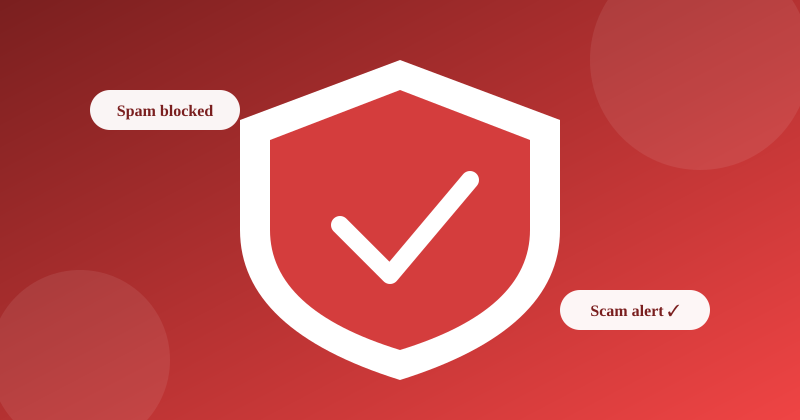

5 Best Free Authenticator Apps for Android (2026)

Two-factor authentication is the single best thing you can do for your accounts — and the app that generates your codes matters more than most people think. Lose your phone without a backup and you can be locked out of everything; pick an app that ties your codes to one company's cloud and switching phones becomes a chore. We tested the most popular free authenticator apps on a mid-range Android phone for one question: which one keeps your 2FA codes safe, portable and free — with no account lock-in?
What we tested
- Offline codes — TOTP codes generated on-device, no internet needed
- Backup & recovery — encrypted export or cloud backup so a lost phone is not a disaster
- Lock-in — can you move your codes to another app, or are you stuck?
- Everyday use — setup speed, fingerprint lock, Wear OS or widget support
1. Aegis Authenticator — best overall, fully free
Aegis is open-source, completely free, and does everything right: encrypted vaults, fingerprint unlock, custom icons, and — most importantly — easy import and export of your codes, so you are never locked in. No account, no cloud, no ads. If you are willing to keep your own encrypted backup file somewhere safe, this is the best authenticator on Android.
2. 2FAS — best free app with cloud backup
2FAS is free with no ads, works fully offline, and offers optional encrypted backup to Google Drive — the safety net Aegis makes you handle yourself. It also has a browser extension and a clean, simple interface. The best pick if you want a backup that looks after itself.
3. Google Authenticator — best if you live in Google's world
Google's own app finally added cloud sync to your Google account, so codes survive a phone change. It is simple, reliable and free — but it has no export feature and no fingerprint lock on Android, so moving away later is painful. Fine if you never plan to leave Google; less ideal if you value portability.
4. Microsoft Authenticator — best for work accounts
If your job or school uses Microsoft 365, this app is almost mandatory for push approvals. It also handles personal Microsoft accounts and standard TOTP codes, with cloud backup to your Microsoft account. As a general-purpose authenticator it is heavier than the others and tied to a Microsoft account, but for work use it is the obvious choice.
5. Ente Auth — best open-source app with its own cloud
Ente Auth is open-source and free, with end-to-end encrypted cloud sync built in — your codes are backed up without trusting a big tech account, and you can self-host if you want. Setup is a little more involved than 2FAS, but for privacy-minded users it is the strongest free option with a real backup story.
Quick comparison
| App | Account needed | Backup | Best for |
|---|---|---|---|
| Aegis | None | Encrypted file export | Full control, no lock-in |
| 2FAS | Optional | Encrypted Google Drive | Easy backup, no ads |
| Google Authenticator | Google account sync | Google users | |
| Microsoft Authenticator | Microsoft | Microsoft account sync | Work / Microsoft 365 |
| Ente Auth | Ente (free) | Encrypted cloud sync | Privacy + backup |
Note: prices and free-tier features change often — always check the Play Store listing before installing. We never link to cracked or modded apps.